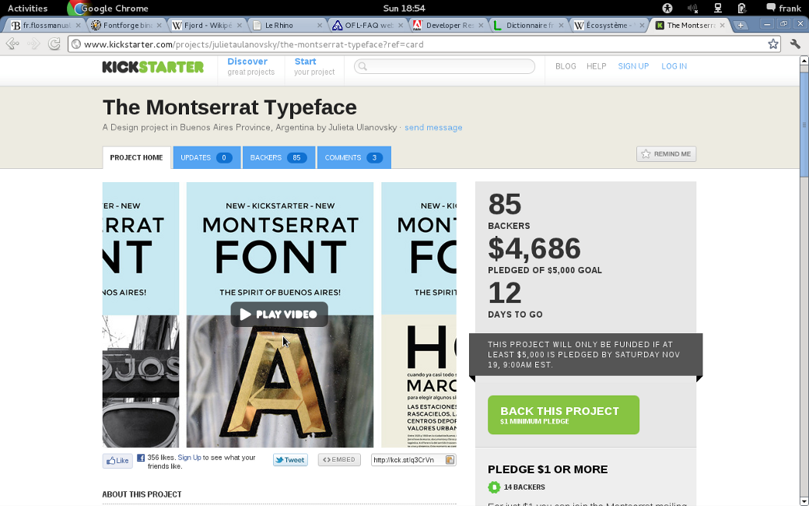
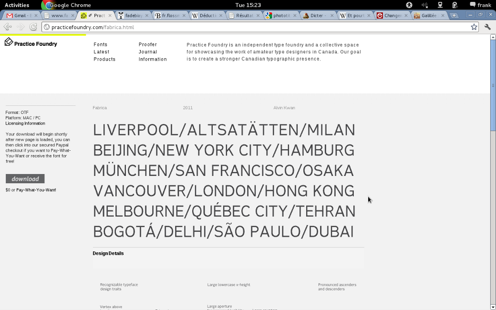
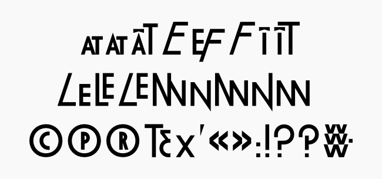

Fonderies et modèles économiques
Il peut sembler surprenant d'aborder la question des modèles économiques dans un livre traitant des polices libres. Mais cela n'est pas le cas, les considérations économiques ont toujours fait partie des valeurs du libre et il convient à cet égard de repréciser que libre ne veut pas forcément dire gratuit, l'inverse étant également vrai.
Même s'il peut exister des fontes gratuites, rien n'est gratuit et le coût, quel qu'il soit est toujours pris en compte quelque part: la question étant évidemment où et par qui. Il convient donc de prendre en compte l'aspect économique de la création de fontes libres, car à mesure que les besoins se précisent, les modalités de mise en œuvre (développements multiples, adaptations linguistiques), vont nécessiter pour bon nombre d'entre elles la mobilisation de spécialistes qui devront travailler main dans la main avec les fondeurs pour créer des fontes libres élaborées, tout en maintenant une exigence.
La question du financement des fontes est plus aiguë encore dans le cas des fontes libres que dans le cas des fontes non-libres, car contrairement à ces dernières, les fontes libres ne sont pas à proprement parler commercialisées comme des marchandises dont la vente est une fin en soi, mais comme un outil devant servir un objectif plus en aval. Ainsi, si rémunération il y a, cette rémunération doit intervenir au préalable (ex ante), et non pas après l'acquisition (ex post) de la fonte, car la libre distribution des fontes ne permet pas d'envisager une rente, dégagée par la perception de royalties, même si, dans les faits, cette rente est largement illusoire ou, tout du moins, symbolique, en tout cas pour la plupart des fondeurs.
Le cas de Google Web Fonts* fournit un exemple assez probant de ce qui se fait ou peut se faire en la matière. À ce jour, Google Web Fonts s'est orienté dans deux directions :
- le financement intégral ex ante par Google Web Fonts, sur la base d'une rémunération de 1000 $ par graisse, avec une prime de 500 $ si la fonte fournie est optimisée pour l'écran. Avec possibilité de contacter et de rémunérer par micro-paiement l'auteur d'une fonte que l'on apprécie tout particuliérement. D'ailleurs la valeur en terme de réputation créé par le lien vers son propre site, son blog, son portfolio, son catalogue de produit en ligne que ce service offre aux auteurs n'est pas non plus négligeable étant donné la grande popularité de ce service (chiffré en millions de visites par mois): même si elle est plus difficile à quantifier. Plusieurs fondeurs sont sortis de l'ombre par la présence d'une de leurs oeuvres publiées sur ce service et ont ainsi décroché d'autres contrats.
- l'animation de campagnes de préfinancement Kickstarter visant à promouvoir le projet de création afin de financer le projet sur la base d'un montant librement fixé par l'auteur (cf. exemple ci-dessous du projet Montserrat de la créatrice argentine Julieta Ulanovsky).

- une troisième piste observable est celle du paiement volontaire à l'instar de ce que le groupe Radiohead avait fait pour l'album In Rainbows en octobre 2007. L'exemple présenté ci-dessous est celui de la fonderie canadienne Practice Foundry (http://practicefoundry.com/) qui propose des fontes libres (sous licence OFL) assorties d'un mécanisme de paiement volontaire sur un mode optionnel, c'est-à-dire que le prix offert par l'internaute peut être 0.

- Une quatrième piste possible est celle de la commande débouchant immédiatement ou, à l'issue d'une période d'exclusivité, sur une fonte libre. C'est ce dernier cas de figure qui s'applique au Lineal B réalisé par Frank Adebiaye dans le cadre de la fonderie Velvetyne pour Pascal Béjean.

Régler en amont la question de la rémunération de la création de fontes libres permet de se dégager de la question du piratage*, en tout cas de ses aspects les plus nocifs, et donc d'autoriser la libre circulation des fontes libres. Toutefois, cela implique d'être davantage à l'écoute des besoins ou des problèmes des utilisateurs, ce qui constitue une rupture par rapport à une création effectuée à l'écart du monde que l'on cherche ensuite à installer dans le paysage typographique. Il ne faudrait toutefois pas que cette prise de conscience remette en cause la liberté de création.